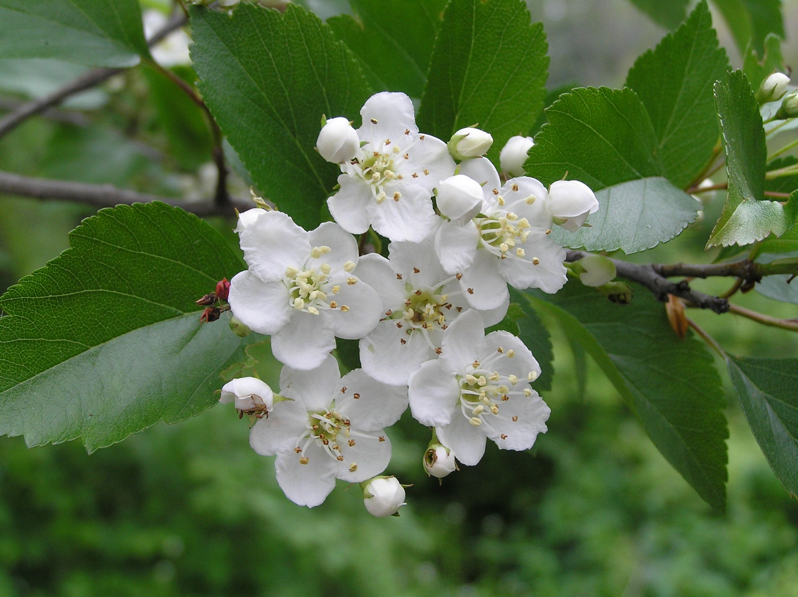
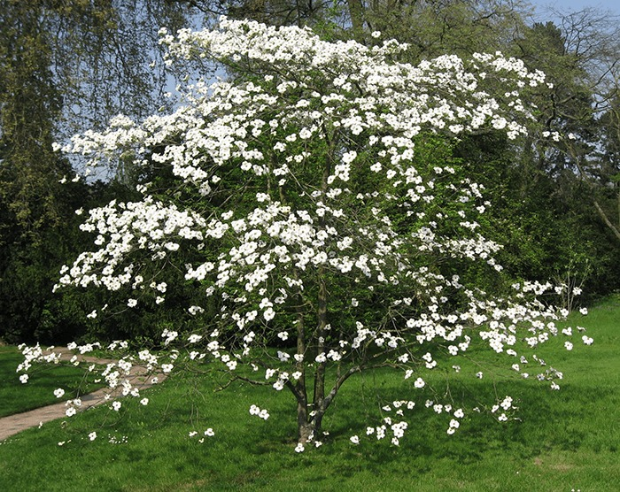

Missouri
Missouri, the Show Me State, was admitted to the United States in 1821 as part of the Missouri Compromise. Located on
the Mississippi and Missouri Rivers, the state was an important hub of transportation and commerce in early America, and
the Gateway Arch in St. Louis is a monument to Missouri’s role as the “Gateway to the West.” St. Louis, Missouri, is
home to the Anheuser-Busch, the maker of Budweiser beer, and boasts the largest beer-producing plant in the country.
| Date of Statehood |
Capital |
Population |
Size |
| August 10, 1821 |
Jefferson City |
6.16 million |
69,715 square miles |
Motto
Salus Populi Suprema Lex Esto (“The welfare of the people shall be the supreme law”)
Flower
White Hawthorn Blossom

Tree
Flowering Dogwood

Interesting facts
-
When the Missouri Territory first applied for statehood, a debate ensued over the government’s right to restrict
slavery. The Missouri Compromise granted Maine entrance into the Union as a free state while allowing Missouri
permission to enter without restrictions on slavery. An amendment was added that prohibited slavery in the remaining
Louisiana Purchase territory north of latitude 36°30’, but the Missouri Compromise was ultimately ruled unconstitutional
by the Supreme Court in 1857.
-
On Oct. 27, 1838, after Mormons attacked a militia believed to be an anti-Mormon mob, Governor Lilburn Boggs issued an
“Extermination Order,” which directed General John Clark to treat all members of the Mormon Church as enemies that must
either be exterminated or removed from the state of Missouri. Governor Christopher Bond officially rescinded the order
in 1976.
-
In 1873, Susan Elizabeth Blow opened the first public kindergarten in the United States in St. Louis after having become
interested in the kindergarten methods of philosopher Friedrich Froebel while traveling in Germany a few years earlier.
Blow later established a training school for kindergarten teachers.
-
The Gateway Arch in St. Louis is the country’s tallest manmade monument at 630 feet. Completed in 1965, the structure
was built to commemorate the city’s importance in settling the west following President Thomas Jefferson’s Louisiana
Purchase in 1803.